Single-cell Proteomics Analysis Tutorial
Tutorial overview
This tutorial demonstrates a typical analysis workflow for single-cell proteomics data using scpviz. Single-cell proteomic datasets are generally more sparse and contain higher levels of missing values than bulk proteomics, requiring careful preprocessing, normalization, and interpretation. Here we illustrate common steps including dataset filtering, handling missing values, normalization, dimensionality reduction, differential expression analysis, and integration with external single-cell tools such as scanpy.
The workflow presented here reflects the authors' current approach in the rapidly developing field of single-cell proteomics. Several recent reviews discuss best practices and analytical considerations for these datasets, including those by Gatto et al. (2023), Vanderaa and Gatto (2023), and Wang et al. (2025). Because the field is evolving quickly, analytical approaches continue to develop and may vary depending on experimental design and data characteristics.
Recommended references
Installation
This tutorial uses single-cell-specific features that require optional dependencies. Install them with:
In this tutorial we use a small example dataset derived from our recent preprint (Sayan and Pang et al. 2025). The dataset contains single-cell proteomic measurements of astrocytes, comparing injured versus uninjured cells.
We begin by loading the dataset into a pAnnData object.
from scpviz import pAnnData as pAnnData
from scpviz import plotting as scplt
from scpviz import utils as scutils
import scanpy as sc
obs_columns = ['date', 'acquisition', 'size', 'cell_type', 'replicate']
pdata_sc = pAnnData.import_data(
source_type='diann',
report_file='report_sc.parquet',
obs_columns=obs_columns
)
The .summary table contains sample-level metadata and quality metrics such as protein counts, peptide counts, and intensity statistics. We can inspect the dataset by looking at the sample summary table:
| Sample | date | cell_type | ... |
|---|---|---|---|
| 20240418_Aur60minDIA_10k_T2_01 | 20240418 | T2 | ... |
| 20240418_Aur60minDIA_10k_T2_02 | 20240418 | T2 | ... |
| 20240418_Aur60minDIA_10k_TEAB35_02 | 20240418 | TEAB35 | ... |
| 20240418_Aur60minDIA_20k_T2_03 | 20240418 | T2 | ... |
| 20240418_Aur60minDIA_20k_TEAB35_01 | 20240418 | TEAB35 | ... |
| 20240418_Aur60minDIA_20k_TEAB35_03 | 20240418 | TEAB35 | ... |
| 20240425_Aur60minDIA_5k_TEAB35_01 | 20240425 | TEAB35 | ... |
| 20240425_Aur60minDIA_10k2_T2_01 | 20240425 | T2 | ... |
| 20240601_Aur60minDIA_S12_astrocyte_J11 | 20240601 | astrocyte | ... |
| 20240601_Aur60minDIA_S12_astrocyte_J12 | 20240601 | astrocyte | ... |
| 20240418_Aur60minDIA_5k_TEAB35_02 | 20240418 | TEAB35 | ... |
| 20240601_Aur60minDIA_S12_astrocyte_J10 | 20240601 | astrocyte | ... |
| 20240601_Aur60minDIA_S12_astrocyte_J15 | 20240601 | astrocyte | ... |
| 20240601_Aur60minDIA_S12_scartissue_K10 | 20240601 | scartissue | ... |
| 20240601_Aur60minDIA_S12_scartissue_K14 | 20240601 | scartissue | ... |
| 20240601_Aur60minDIA_S12_scartissue_K15 | 20240601 | scartissue | ... |
| 20240601_Aur60minDIA_S12_scartissue_K12 | 20240601 | scartissue | ... |
| 20240601_Aur60minDIA_S12_astrocyte_J14 | 20240601 | astrocyte | ... |
| 20240601_Aur60minDIA_S12_scartissue_K13 | 20240601 | scartissue | ... |
| 20240601_Aur60minDIA_S12_scartissue_K11 | 20240601 | scartissue | ... |
Here, the metadata column cell_type indicates whether each single-cell measurement corresponds to an astrocyte or neuronal cell. Additional columns in the summary include quality metrics such as protein counts, peptide counts, and intensity statistics for each sample.
Preprocessing workflow for single-cell proteomics
Below is the authors' current preprocessing workflow used in this tutorial. The steps are organized to progressively clean the dataset before performing normalization and downstream analysis.
Filter to specific samples
First, we restrict the dataset to the astrocyte single-cell samples of interest and remove non astrocytic samples (T2 and TEAB35). We then remap the original cell_type labels into a cleaner condition column for downstream analysis.
pdata_sc_filtered = pdata_sc.filter_sample(condition="cell_type not in ['T2','TEAB35']")
🧭 [USER] Filtering samples [condition]:
Returning a copy of sample data based on condition:
🔸 Condition: cell_type not in ['T2','TEAB35']
ℹ️ Auto-cleanup: Removed 3228 empty proteins (all-NaN or all-zero). Proteins: O35226-4, E9Q4N7, Q6PD26, Q91ZP6, Q8R3H9, P97868, P97868-2, Q3U1F9, Q8C196, P46662, ...
→ Samples kept: 11, Samples dropped: 9
→ Proteins kept: 5450
Next, we remap the labels so that the two biological conditions are easier to interpret.
mapping = {
"scartissue": "SWI",
"astrocyte": "Uninjured",
}
pdata_sc_filtered.summary["condition"] = (pdata_sc_filtered.summary["cell_type"].replace(mapping))
pdata_sc_filtered.update_summary()
The next steps perform general preprocessing to remove low-confidence proteins and low-quality samples.
Filter proteins by significance (FDR)
First, we filter proteins using the default q-value / FDR cutoff (default: 0.01).
🧭 [USER] Filtering proteins [Significance|File-mode]:
ℹ️ [INFO] No group provided. Defaulting to sample-level significance filtering.
Returning a copy of protein data based on significance thresholds:
🔸 Files requested: All
🔸 FDR threshold: 0.01
🔸 Logic: any (protein must be significant in ≥1 file(s))
→ Proteins kept: 4637, Proteins dropped: 813
✅ [OK] RS matrix filtered: 4637 proteins, 59894 peptides retained.
Filter samples by minimum protein count
Next, we remove samples with very low protein coverage as a simple quality control step.
pdata_sc_filtered = pdata_sc_filtered.filter_sample(min_prot=1000)
Filter proteins to have valid genes and duplicated abundance profiles
We then filter proteins using two additional criteria:
- valid_genes - proteins must be associated with a valid gene name. Entries without gene annotations are removed.
- unique_profiles - if isoforms are not distinguished by unique peptides, they can appear with identical abundance profiles. This is common in single-cell datasets because of missing peptide measurements. These redundant profiles are removed.
pdata_sc_filtered = pdata_sc_filtered.filter_prot(
valid_genes=True,
unique_profiles=True,
)
🧭 [USER] Filtering proteins [valid genes, unique profiles]:
Returning a copy of protein data with the following filters applied:
🔸 valid_genes — removed 25 proteins with invalid gene names
🔸 valid_genes — resolved 576 duplicate gene names by appending numeric suffixes
🔸 unique_profiles — removed 801 duplicate and 0 empty abundance profiles (801 total)
→ Proteins kept: 3811
→ Peptides kept (linked): 59848
✅ [OK] RS matrix filtered: 3811 proteins, 59848 peptides retained.
The above steps perform general cleanup. For biological comparison, it may help to apply additional filtering to increase confidence in downstream analyses.
Filter proteins based on presence within groups
Single-cell datasets contain many missing values. A common approach is to retain proteins that are present in a minimum fraction of cells within the biological groups of interest.
Here we require proteins to be present in at least 40% of cells in each condition (Uninjured or SWI). The argument match_any=True sets that a protein only needs to satisfy the detection threshold in one of the specified groups, rather than all groups.
pdata_sc_processed = pdata_sc_filtered.filter_prot_found(
min_ratio=0.4,
group=["condition"],
match_any=True,
)
🧭 [USER] Filtering proteins [Found|Group-mode|ANY]:
ℹ️ [INFO] Found matching groups(s): ['Uninjured', 'SWI']. Automatically annotating detection by group values.
Returning a copy of protein data based on detection thresholds:
🔸 Groups requested: ['Uninjured', 'SWI']
🔸 Minimum ratio: 0.4
🔸 Logic: any (protein must be detected in ≥1 group(s))
→ Proteins kept: 3192, Proteins dropped: 619
✅ [OK] RS matrix filtered: 3192 proteins, 56641 peptides retained.
Normalization for single-cell data
After preprocessing, we normalize the dataset for downstream analysis.
DirectLFQ normalization
For single-cell proteomics data, DirectLFQ normalization is often a strong default (directlfq). DirectLFQ aggregates peptide-level data to protein-level intensities, and is often more robust to missing peptide measurements, which are common in single-cell proteomics datasets. scpviz supports DirectLFQ with the following keyword arguments:
- input_type_to_use (str): For 'directlfq', specify 'pAnnData' (default, passing through a pAnnData object), 'diann_precursor_ms1', or 'diann_precursor_ms1_and_ms2'.
- path (str): For 'directlfq', the path to the DIA-NN report.tsv or report.parquet output file.
- strict (bool): For 'directlfq', whether to use only unique peptides (True) or unique + shared peptides (False, default).
See the API reference for more details on normalization options.
pdata_sc_norm = pdata_sc_processed.copy()
pdata_sc_norm.normalize(method="directlfq")
🧭 [USER] Running directlfq normalization on peptide-level data.
ℹ️ Note: please be patient, directlfq can take a minute to run depending on data size. Output files will be produced.
ℹ️ [INFO] Expanded multi-protein peptide groups: 56641 → 66848 rows.
2026-02-01 22:23:19,113 - directlfq.lfq_manager - INFO - Starting directLFQ analysis.
2026-02-01 22:23:19,437 - directlfq.lfq_manager - INFO - Performing sample normalization.
2026-02-01 22:23:19,447 - directlfq.lfq_manager - INFO - Estimating lfq intensities.
2026-02-01 22:23:19,450 - directlfq.protein_intensity_estimation - INFO - 3192 lfq-groups total
2026-02-01 22:23:20,992 - directlfq.protein_intensity_estimation - INFO - using 12 processes
2026-02-01 22:23:33,194 - directlfq.lfq_manager - INFO - Could not add additional columns to protein table, printing without additional columns.
2026-02-01 22:23:33,194 - directlfq.lfq_manager - INFO - Writing results files.
2026-02-01 22:23:33,532 - directlfq.lfq_manager - INFO - Analysis finished!
ℹ️ Set protein data to layer X_norm_directlfq.
✅ directlfq normalization complete. Results are stored in layer 'X_norm_directlfq'.
⚠️ Downstream imputation should be performed with the flag `use_zeros_as_nan` set to True due to directlfq output format returning NaNs as 0s.
Note
The directLFQ algorithm will create files in the workspace. Running directLFQ multiple times will overwrite these files. If you want to keep the output files, consider copying them to a different location before running directLFQ again.
Median normalization using fully observed proteins
Some workflows normalize using the median of fully observed proteins. This approach uses only proteins that have abundance values in every sample.
scpviz supports this using the use_nonmissing=True option. The force=True flag is required to override the default behavior of normalizing only if all samples have less than 50% missing values, which is likely for single-cell data.
pdata_sc_norm = pdata_sc_processed.copy()
pdata_sc_norm.normalize(
method="median",
use_nonmissing=True,
force=True,
)
🧭 [USER] Global normalization using 'median' (using only fully observed columns). Layer will be saved as 'X_norm_median'.
⚠️ [WARN] 1 sample(s) have >50% missing values.
Try running `.impute()` before normalization. Suggest to use the flag `use_nonmissing=True` to normalize using only consistently observed proteins.
⚠️ [WARN] Proceeding with normalization despite bad rows (force=True).
ℹ️ Normalizing using only fully observed columns: 872
✅ Normalized all 10 samples.
ℹ️ Set protein data to layer X_norm_median.
Imputation
Imputation for single-cell proteomics data is often more challenging than for bulk datasets because missing values are much more common and can reflect both technical sparsity and biological signal. For this reason, imputation should be applied carefully and with the downstream analysis in mind.
A common conservative approach is minimum-value imputation, where missing values are replaced with a small value scaled relative to the observed minimum.
Another recommendation is to use the PIMMS algorithm (Proteomics Imputation Modeling Mass Spectrometry), which was developed specifically for proteomics data imputation. For more information, see the package or the manuscript.
In scpviz, this can be run using:
Known compatibility issue
pimms-learn is an optional dependency available via pip install "scpviz[sc]" and requires Python ≥ 3.10.
However, pimmslearn currently has an internal incompatibility with seaborn ≥ 0.13 (it uses a private API that was removed). PIMMS imputation may fail at runtime even if installation succeeds. If you encounter an ImportError for _BarPlotter, either manually downgrade seaborn to 0.12.2 or use minimum-value imputation as a reasonable fallback for exploratory analysis.
Exploratory visualization
After preprocessing and normalization, we can begin exploring the single-cell dataset visually. Below are a few useful ways to examine sample quality, overlap between conditions, and low-dimensional structure.
First, we define a color palette for the conditions:
condition_color={
"SWI": "#1F98B1",
"Uninjured": "#84C8D5" # "#CAEEFB"
}
QC and Venn diagrams
Before exploring dimensionality reduction or differential expression, it is useful to examine basic dataset characteristics such as protein coverage and overlap between conditions.
Comparing protein counts across conditions provides a quick quality-control view of depth and variability.
fig, ax = plt.subplots(figsize=(2, 3))
dataset = pdata_sc_filtered
order = ['Uninjured', 'SWI']
sns.barplot(
x="condition",
y="protein_count",
data=dataset.summary,
errorbar="sd",
capsize=.1,
saturation=1,
alpha=0.5,
palette=condition_color,
width=0.75,
order=order,
ax=ax,
edgecolor="black",
linewidth=0.8,
)
sns.swarmplot(
x="condition",
y="protein_count",
data=dataset.summary,
order=order,
color="k",
ax=ax,
)
from scipy.stats import ttest_ind
statsUninjured = dataset.summary[
dataset.summary["condition"] == "Uninjured"
]["protein_count"]
statsSWI = dataset.summary[
dataset.summary["condition"] == "SWI"
]["protein_count"]
max_prot_count = dataset.summary["protein_count"].max()
scplt.plot_significance(
ax,
max_prot_count + 350,
100,
pval=ttest_ind(statsUninjured, statsSWI).pvalue,
fontsize=11,
)
plt.ylabel("Protein Count", fontsize=13, labelpad=4)
plt.xlabel("Type", fontsize=13, labelpad=4)
ax.tick_params(axis="x", labelsize=11)
ax.tick_params(axis="y", labelsize=11)
plt.ylim(0, 4800)
plt.show()
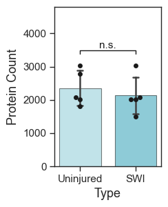
A Venn diagram provides a simple view of proteins unique to each condition and those shared between them. We can also extract the lists of proteins in each category by accessing the returned venn_contents.
fig, ax = plt.subplots(figsize=(3, 3))
ax, venn_contents = scplt.plot_venn(
ax,
dataset,
classes="condition",
set_colors=["#84C8D5", "#1F98B1"],
return_contents=True,
)
plt.rcParams.update({"font.size": 12}) # run twice if font size does not update
plt.show()
setUninjured = set(venn_contents["Uninjured"])
setSWI = set(venn_contents["SWI"])
venn_df = pd.DataFrame({
"Uninjured_only": pd.Series(sorted(setUninjured - setSWI)),
"SWI_only": pd.Series(sorted(setSWI - setUninjured)),
"Both": pd.Series(sorted(setSWI & setUninjured)),
})
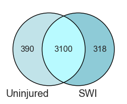
We can also directly visualize the abundance of specific proteins across conditions.
The helper function plot_abundance_boxgrid() provides a convenient way to display violin/box/bar-style abundance plots with sample-level points.
If you want to access the underlying data directly, .get_abundance() returns a dataframe containing the abundance values.
abundance_itgam_cd68 = pdata_sc_norm.get_abundance(
namelist=["Itgam", "Cd68"],
classes="condition",
)
abundance_itgam_cd68 # columns: abundance, log2_abundance, gene, Class
| index | cell | accession | abundance | class | ... |
|---|---|---|---|---|---|
| 0 | 20240601_Aur60minDIA_S12_astrocyte_J11 | P05555 | -19.931569 | Uninjured | ... |
| 1 | 20240601_Aur60minDIA_S12_astrocyte_J12 | P05555 | -19.931569 | Uninjured | ... |
| 2 | 20240601_Aur60minDIA_S12_astrocyte_J10 | P05555 | -19.931569 | Uninjured | ... |
| 3 | 20240601_Aur60minDIA_S12_astrocyte_J15 | P05555 | -19.931569 | Uninjured | ... |
| 4 | 20240601_Aur60minDIA_S12_scartissue_K10 | P05555 | 20.261621 | SWI | ... |
text_kwargs = dict(
fontsize=11,
color="black",
offset=1,
)
figsize = (2, 2.5)
fig, ax = pdata_sc_norm.plot_abundance_boxgrid(
namelist=["Itgam", "Cd68"],
classes="condition",
plot_type="box",
log_scale=True,
figsize=figsize,
text_kwargs=text_kwargs,
palette=condition_color,
)
plt.show()
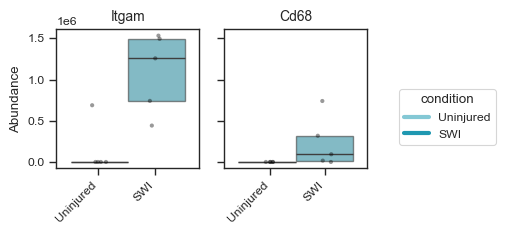
figsize = (2, 2.5)
bar_kwargs = {"width": 0.15}
fig, ax = pdata_sc_norm.plot_abundance_boxgrid(
namelist=["Itgam", "Cd68"],
classes="condition",
plot_type="bar",
log_scale=True,
figsize=figsize,
bar_kwargs=bar_kwargs,
palette=condition_color,
)
plt.show()
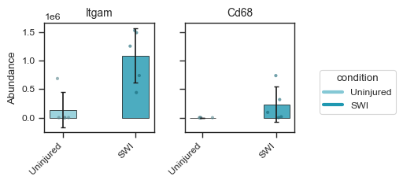
The same panels support significance brackets: pass sig_pairs to run pairwise tests between groups and draw p-value annotations on the plot. With exactly two conditions, sig_pairs=True compares them automatically.
fig, axes = pdata_sc_norm.plot_abundance_boxgrid(
namelist=["Itgam", "Cd68"],
classes="condition",
plot_type="box",
figsize=figsize,
sig_pairs=True,
palette=condition_color,
)
plt.show()
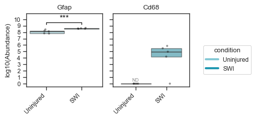
See the Plotting tutorial — Significance brackets for explicit multi-group pairs, shared groups in several comparisons, and sig_kwargs (test method, bracket styling).
PCA
PCA reduces the high-dimensional protein abundance matrix into a smaller number of orthogonal components that capture the largest sources of variance in the dataset. We can color cells by (multiple) discrete sample class or by the abundance of a selected protein. For more options with coloring and marker shapes, see the API reference. For tuple-key mapping (combined metadata styling) and sequential overlay examples on the same axes, see the Plotting tutorial.
fig, ax = plt.subplots(1, 1, figsize=(3, 3))
ax = scplt.plot_pca(
ax,
pdata_sc_norm,
color=["condition"],
s=20,
alpha=.8,
pca_params={"n_comps": 9},
force=True,
cmap=condition_color,
add_ellipses=False,
)
scplt.shift_legend(ax)
plt.show()
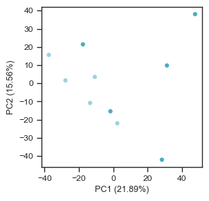
fig, ax = plt.subplots(1, 1, figsize=(3, 3))
ax = scplt.plot_pca(
ax,
pdata_sc_norm,
color="Itgam",
cmap="plasma",
s=20,
alpha=.8,
force=True,
)
scplt.shift_legend(ax)
plt.show()
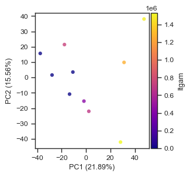
For sparse markers such as ITGAM, many cells have zero or missing abundance. Use
colorbar_norm=mcolors.LogNorm(...) to emphasize differences among detected cells,
and nan_color to plot undetected cells underneath the colormap layer.
import matplotlib.colors as mcolors
fig, ax = plt.subplots(1, 1, figsize=(3, 3))
ax = scplt.plot_pca(
ax,
pdata_sc_norm,
color="Itgam",
cmap="plasma",
colorbar_norm=mcolors.LogNorm(vmin=1, vmax=1e7),
nan_color="grey",
s=20,
alpha=.8,
force=True,
)
scplt.shift_legend(ax)
plt.show()
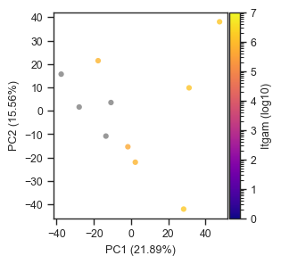
fig = plt.figure(figsize=(5, 5))
ax = fig.add_subplot(111, projection="3d")
ax = scplt.plot_pca(
ax,
pdata_sc_norm,
color=["condition"],
force=True,
plot_pc=[1, 2, 3],
cmap=condition_color,
)
zlab = ax.get_zlabel()
ax.set_zlabel("")
ax.text2D(
1.05,
0.55,
zlab,
transform=ax.transAxes,
rotation=90,
ha="left",
va="center",
fontsize=9.5,
)
scplt.shift_legend(ax)
plt.show()
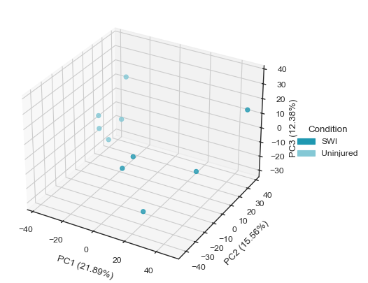
fig = plt.figure(figsize=(5, 5))
ax = fig.add_subplot(111, projection="3d")
ax = scplt.plot_pca(
ax,
pdata_sc_norm,
color="Itgam",
cmap="plasma",
force=True,
plot_pc=[1, 2, 3],
)
zlab = ax.get_zlabel()
ax.set_zlabel("")
ax.text2D(
1.05,
0.55,
zlab,
transform=ax.transAxes,
rotation=90,
ha="left",
va="center",
fontsize=9.5,
)
scplt.shift_legend(ax)
plt.show()
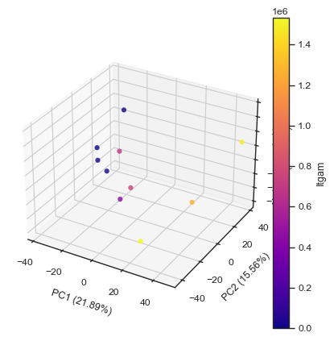
UMAP
UMAP is another useful low-dimensional embedding method for single-cell proteomics data. Compared with PCA, UMAP often captures local neighborhood relationships between cells more effectively, and is often helpful for visualizing cell-state separation or potential subpopulations.
scpviz includes UMAP plotting through plot_umap(). Internally, UMAP uses a nearest-neighbor graph (neighbor()) built from PCA-reduced data (pca() or harmony()), so both the neighbor settings and UMAP settings can affect the final embedding.
The main parameters can be passed through umap_params, including:
n_neighbors- neighbor graph parameter controlling local connectivitymin_dist- UMAP parameter controlling how tightly points are packedmetric- neighbor graph distance metricspread- UMAP parameter controlling overall embedding scalerandom_state- random seed for reproducibilityn_pcs- number of principal components used to build the neighbor graph
For datasets with stronger batch effects, scpviz also supports Harmony integration through pdata.harmony(). This method applies Harmony-based batch correction using scanpy.external.pp.harmony_integrate on PCA-reduced protein or peptide data before downstream visualization.
fig, ax = plt.subplots(1, 1, figsize=(3, 3))
umap_params = {"min_dist": 0.3, "n_neighbors": 7}
ax = scplt.plot_umap(
ax,
pdata_sc_norm,
classes=["condition"],
s=20,
alpha=.8,
force=True,
umap_params=umap_params,
cmap=condition_color,
)
scplt.shift_legend(ax)
plt.show()
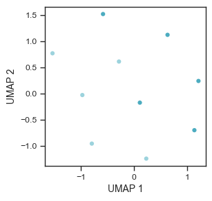
fig, ax = plt.subplots(1, 1, figsize=(3, 3))
umap_params = {"min_dist": 0.3, "n_neighbors": 7}
ax = scplt.plot_umap(
ax,
pdata_sc_norm,
color="Itgam",
cmap="plasma",
s=20,
alpha=.8,
force=True,
umap_params=umap_params,
)
scplt.shift_legend(ax)
plt.show()
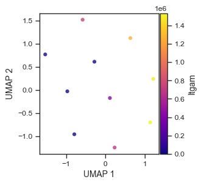
import matplotlib.colors as mcolors
fig, ax = plt.subplots(1, 1, figsize=(3, 3))
umap_params = {"min_dist": 0.3, "n_neighbors": 7}
ax = scplt.plot_umap(
ax,
pdata_sc_norm,
color="Itgam",
cmap="plasma",
colorbar_norm=mcolors.LogNorm(vmin=1, vmax=1e7),
nan_color="black",
s=20,
alpha=.8,
force=True,
umap_params=umap_params,
)
scplt.shift_legend(ax)
plt.show()
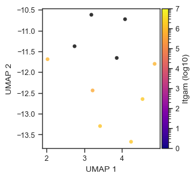
Differential expression
Differential expression (DE) analysis can be used to identify proteins that differ between biological conditions. In this example, we compare SWI against Uninjured cells.
case_values = [{"condition": "SWI"}, {"condition": "Uninjured"}]
color_dict = {
"upregulated": condition_color["SWI"],
"downregulated": condition_color["Uninjured"],
"not_significant": "#FFFFFF6A",
}
A common way to visualize DE results is with a volcano plot, which shows the relationship between fold change and statistical significance.
Donor-blocked DE
When the same donors (animals, cases, …) contribute cells to both conditions, ordinary two-group tests can overstate significance. scpviz can account for that donor structure with a mixed-effects / pseudobulk model via pdata.mixed_de() — see the Differential Expression tutorial.
scpviz supports multiple fold-change calculation modes:
mean- compare the mean abundance between groups; this is the defaultpairwise_median- compute fold changes across all possible sample pairs and take the medianpep_pairwise_median- compute peptide-level pairwise fold changes per protein and take the median; this is similar to the approach used in Proteome Discoverer
The pairwise-based methods can sometimes be more robust to variation, but for single-cell datasets they may be less reliable if the data are too sparse. In this example, we compute differential expression for each protein across the two groups.
fig, ax = plt.subplots(figsize=(4, 4))
ax, volcano_df = scplt.plot_volcano(
ax,
pdata_sc_norm,
values=case_values,
threshold=0.05,
return_df=True,
color=color_dict,
fold_change_mode="mean",
label=[10, 5],
)
ax.set_ylabel("$log_{10}$ p value", fontsize=13, labelpad=4)
ax.set_xlabel("$log_{2}$ fold change", fontsize=13, labelpad=4)
ax.tick_params(axis="x", labelsize=11)
ax.tick_params(axis="y", labelsize=11)
plt.show()
🧭 [USER] Running differential expression [protein]
🔸 Comparing groups: [{'condition': 'SWI'}] vs [{'condition': 'Uninjured'}]
🔸 Group sizes: 5 vs 5 samples
🔸 Method: ttest | Fold Change: mean | Layer: X
🔸 P-value threshold: 0.05 | Log2FC threshold: 1
ℹ️ [INFO] 413 proteins were not comparable (zero or NaN mean in one group).
✅ DE complete. Results stored in:
• .stats["[{'condition': 'SWI'}] vs [{'condition': 'Uninjured'}]"]
• Columns: log2fc, p_value, significance, etc.
• Upregulated: 86 | Downregulated: 88 | Not significant: 2605
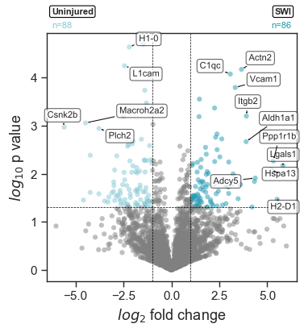
Here, label=[10, 5] controls how many protein labels are shown on the plot from each side of the distribution. In this case, the plot will annotate the top 10 proteins on one side and 5 on the other, based on the internal ranking used for labeling.
Because single-cell data can be sparse, DE results should be interpreted with some care. In practice, it is often useful to combine DE with abundance plots, detection-rate filtering, or downstream enrichment analysis to focus on the most biologically meaningful candidates.
Access the DE results stored in .stats under the key shown in the output including log₂ fold change, p-value, and significance score.
STRING enrichment
We can perform STRING enrichment on the sets of up- and downregulated proteins from our DE analysis. First, list the available enrichment keys:
Since we just ran a DE analysis, the key SWI vs Uninjured is available. We can run STRING functional enrichment on both up- and downregulated proteins.
pdata_sc_norm.enrichment_functional(from_de=True, de_key="SWI vs Uninjured")
🧭 [USER] Running STRING enrichment [DE-based: [{'condition': 'SWI'}] vs [{'condition': 'Uninjured'}]]
🔹 Up-regulated proteins
ℹ️ Found 0 cached STRING IDs. 86 need lookup.
🌐 [API] UniProt mapped: 82 / 86
🌐 [API] STRING mapped: 0 / 4 (missing after UniProt)
ℹ️ Cached 82 STRING ID mappings.
🔸 Proteins: 86 → STRING IDs: 82
🔸 Species: 10090 | Background: None
✅ [OK] Enrichment complete (7.11s)
• Access result: pdata.stats['functional']["SWI vs Uninjured_up"]["result"]
• Plot command : pdata.plot_enrichment_svg("SWI vs Uninjured", direction="up")
• View online : https://string-db.org/cgi/network?identifiers=10090.ENSMUSP00000020277%0d10090...ENSMUSP00000030187&caller_identity=scpviz&species=10090&show_query_node_labels=1
🔹 Down-regulated proteins
ℹ️ Found 0 cached STRING IDs. 88 need lookup.
🌐 [API] UniProt mapped: 83 / 88
🌐 [API] STRING mapped: 1 / 5 (missing after UniProt)
ℹ️ Cached 84 STRING ID mappings.
🔸 Proteins: 88 → STRING IDs: 84
🔸 Species: 10090 | Background: None
✅ [OK] Enrichment complete (5.09s)
• Access result: pdata.stats['functional']["SWI vs Uninjured_down"]["result"]
• Plot command : pdata.plot_enrichment_svg("SWI vs Uninjured", direction="down")
• View online : https://string-db.org/cgi/network?identifiers=10090.ENSMUSP00000105980%0d10090...caller_identity=scpviz&species=10090&show_query_node_labels=1
Once enrichment is complete, you can visualize the Gene Ontology (Biological Process) results:
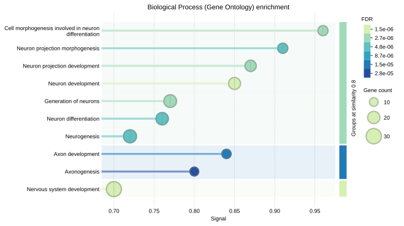
Note
Refer to the Enrichment tutorial for details on additional STRING features such as PPI networks, GSEA, and combined enrichment-PPI analyses.
Using scanpy
scpviz is designed to work well with external single-cell analysis tools. In particular, the .prot and .pep attributes are standard AnnData objects, so once the data are prepared, they can be used directly with functions from packages such as scanpy.
Before using scanpy, it is important to clean the data matrix because scanpy generally expects 0 values rather than NaNs in .X. If NaNs are left in place, many scanpy functions will raise errors.
Once cleaned, you can work directly with pdata_sc_norm.prot or pdata_sc_norm.pep, depending on whether you want to analyze protein-level or peptide-level data.
For example, the protein-level matrix can be passed directly into a standard scanpy workflow:
sc.pp.scale(pdata_sc_norm.prot)
sc.tl.pca(pdata_sc_norm.prot, svd_solver="arpack")
sc.pp.neighbors(pdata_sc_norm.prot)
sc.tl.leiden(
pdata_sc_norm.prot,
flavor="leidenalg",
n_iterations=2,
resolution=2,
)
sc.tl.umap(pdata_sc_norm.prot)
sc.pl.umap(
pdata_sc_norm.prot,
color=["condition", "leiden"],
size=100,
)
sc.tl.dendrogram(pdata_sc_norm.prot, groupby="condition")
sc.tl.rank_genes_groups(
pdata_sc_norm.prot,
groupby="condition",
method="wilcoxon",
)
sc.pl.rank_genes_groups_dotplot(
pdata_sc_norm.prot,
n_genes=10,
swap_axes=False,
gene_symbols="Genes",
)
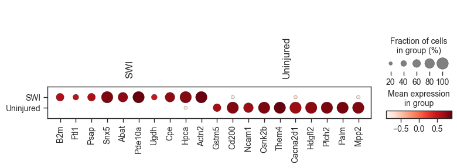
This makes it straightforward to use scpviz for preprocessing and proteomics-specific handling, while still taking advantage of the broader single-cell ecosystem for clustering, neighborhood graph construction, marker ranking, and visualization.
Note
See the scanpy tutorials for additional examples and workflows that can be applied directly to pdata_sc_norm.prot or pdata_sc_norm.pep.
Next steps
Further analyses that can be performed on single-cell proteomics data include:
- clustering using scanpy or other single-cell frameworks
- trajectory or pseudotime analysis
- pathway enrichment of differentially expressed proteins
- integration with transcriptomic single-cell datasets
Because scpviz stores data in standard AnnData objects, it can be easily combined with tools from the broader single-cell ecosystem.